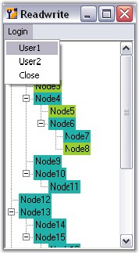
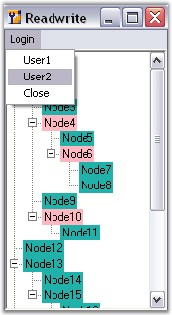

This event is raised before the node goes into edit mode. Below are examples which handles the BeforeEdit event.
Event Data
The TreeNodeAdvBeforeEditEventHandler receives an argument of type TreeNodeAdvBeforeEditEventArgs containing data related to this event. The following TreeNodeAdvBeforeEditEventArgs' members provide information specific to this event.
|
Members |
Description |
|
Node |
This returns a TreeNodeAdv. |
|
TextBox |
Returns the textbox that is used to edit the node. |
|
Cancel |
Gets or Sets a value indicating whether the event should be canceled. |
Method to set UnEditable Nodes
Methods to make a node completely uneditable even when the,
1. Node is visible.
2. Node is clickable.
BeforeEdit event can be used for this purpose. In this example, the Parent Nodes are made uneditable.TreeNodeAdvBeforeEditEventArgs.Node indicates the target node for editing.
The desired condition is checked on that node and based on the result, the TreeNodeAdvBeforeEditEventArgs.Cancel property is set appropriately.
|
[C#]
private void treeViewAdv1_BeforeEdit(object sender, Syncfusion.Windows.Forms.Tools.TreeNodeAdvBeforeEditEventArgs e) { // Check if they are parent nodes. if ((e.Node.Text == "Node0") || (e.Node.Text == "Node5")) { e.Cancel = true; } } |
|
[VB.NET] Private Sub treeViewAdv1_BeforeEdit(ByVal sender As Object, ByVal e As Syncfusion.Windows.Forms.Tools.TreeNodeAdvBeforeEditEventArgs)
' Check if they are parent nodes. If (e.Node.Text = "Node0") OrElse (e.Node.Text = "Node5") Then e.Cancel = True End If End Sub |
Cancel Read / Write property for particular user nodes
By cancelling the BeforeEdit event for particular nodes of particular users, the Read/Write property can be canceled.
|
[C#]
private void treeViewAdv1_BeforeEdit(object sender, Syncfusion.Windows.Forms.Tools.TreeNodeAdvBeforeEditEventArgs e) { // By cancelling the BeforeEdit event for particular nodes helps to cancel the Read/Write property of that nodes. if(username=="user1") { if ((e.Node.Text == "Node0") || (e.Node.Text == "Node5")||(e.Node.Text == "Node3")||(e.Node.Text == "Node8")) { e.Cancel = true; } } else if(username=="user2") if ((e.Node.Text == "Node2") || (e.Node.Text == "Node4")||(e.Node.Text == "Node6")||(e.Node.Text == "Node10")) { e.Cancel = true; } } |
|
[VB.NET]
Private Sub treeViewAdv1_BeforeEdit(ByVal sender As Object, ByVal e As Syncfusion.Windows.Forms.Tools.TreeNodeAdvBeforeEditEventArgs)
' By cancelling the BeforeEdit event for particular nodes helps to cancel the Read/Write property of that nodes. If username="user1" Then If (e.Node.Text = "Node0") OrElse (e.Node.Text = "Node5") OrElse (e.Node.Text = "Node3") OrElse (e.Node.Text = "Node8") Then e.Cancel = True End If Else If username="user2" Then If (e.Node.Text = "Node2") OrElse (e.Node.Text = "Node4") OrElse (e.Node.Text = "Node6") OrElse (e.Node.Text = "Node10") Then e.Cancel = True End If End If End Sub |
The following figure shows the color change for some of the nodes of the user that indicates the canceled Read/Write property for that node.

Figure 1169: TreeView of User1 With Read / Write property Canceled

Figure 1170: TreeView of User2 With Read / Write property Canceled